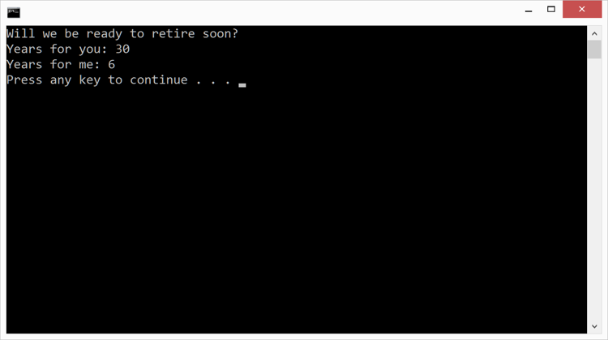

Duration
20 minutes
Lab goals
In this exercise, you will build a C# program that uses a person's age and the standard retirement age to calculate how many years they have left before retirement. The program will let you practice using variables and performing mathematical calculations. Here are the key tasks that you will be coding:
- Declare integer variables to hold ages and years-to-retirement.
- Create a symbolic constant for the standard retirement age.
- Declare a string variable to store a message.
- Calculate years-to-retirement.
- Output a message and the calculated values to the Console.
Below is the output from the finished application.
Required assets
The provided Exercise 2/Part2.Completed folder contains a completed version of the exercise you can use to check your work. Please make sure you have this folder before you begin.
Tip: If you are doing this exercise live in a session, make sure to make good use of the instructor,
they are online to answer any questions you have!
Steps
Below are the step-by-step instructions to implement the exercise.
Create a new Console application
- Start Visual Studio.
- Create a new Console Project using either the New Project... link on the home screen or the File > New > Project menu entry.
- Name the Project and Solution Fundamentals.
- Fill in the Location field with the name of the folder where you would like to store your work.
- Click OK.
Implement your program
- The file Program.cs should already be open in the text editor. If it is not, open it by double-clicking on the filename in the Solution view.
-
Please delete the
Console.WriteLineline that Visual Studio generated insideMain. -
All your code will be written inside the curly braces that delimit
Main. Position the cursor in the text-editor window on the line below the open-curly-brace forMain. -
Declare two integer variables to hold the ages for two different people. Name the variables
yourAgeandmyAge. To get you started, code for the first variable is shown below; notice how it includes the type (int), a name (yourAge), and an initial value (the= 35part). It also has a semicolon to mark the end of the statement.int yourAge = 35;
-
Declare an integer constant named
retirementand initialize it to the typical retirement age in your country (e.g. 65). The code will be the same as declaring a regular variable except that it will have the wordconstat the beginning. A variable that includes the wordconstis not allowed to change its value; that is, it always keeps the value you put in when you declare it. -
Declare a
stringvariable namedmessageand initialize it to"Will we be ready to retire soon?". -
An equals sign is called the assignment operator and you use it to load a new value
into an existing variable. Assignment is very similar to initialization: the difference
is that initialization happens once when you first declare a variable while assignment happens
afterward and can occur as many times as you need (see below). In your program, use assignment
to change the
myAgevariable to a different value.int x = 3; // initialization x = 4; // assignment
-
Calculate the number of years until retirement for both people (i.e.
yourAgeandmyAge). Do this by subtracting the age from theretirementvariable. Store the results in variables namedyearsToRetirementForYouandyearsToRetirementForMe. The code below shows how to perform subtraction; you can adapt it for use in the retirement-age code.int x = 3; int y = 4; int difference = y - x;
-
Use
Console.WriteLineto print out the value of themessagevariable. The code below shows how to print variables; you can adapt it to print the value ofmessage.int x = 3; Console.WriteLine(x); string s = "hello"; Console.WriteLine(s);
-
The next goal is to print text similar to that shown below. Notice how it starts with the
string "Years for you: " and then ends with the value of the
yearsToRetirementForYouvariable. You could do this using two print statements as shown below. Notice how the first one usesConsole.Write(notConsole.WriteLine) so the two parts end up on the same output line. This shows the difference betweenConsole.WriteandConsole.WriteLine, the "Line" in the name indicates it adds a newline character to the output automatically.Console.Write("Years for you: "); Console.WriteLine(yearsToRetirementForYou);A more elegant solution is to use a singleConsole.WriteLineto print both values. One way to do this string concatenation (i.e. joining together) to create a single value to pass toConsole.WriteLine. The code below shows this technique. The+sign means concatenation here because one of the operands is a string; whenever there is a string involved + means concatenation.Console.WriteLine("Years for you: " + yearsToRetirementForYou);Add the line of code above to your program. -
The final goal is to print text similar to that shown below. It starts with the string "Years for me: "
and ends with the value of the
yearsToRetirementForMevariable. The goal here is basically the same as the previous step; however, we will use this as a chance to introduce the idea of string formatting. This will give us an alternate way to produce the desired output from a single line of code. Please look at the code shown below. The first thing we pass toConsole.WriteLineis called the format string ("Hello {0} you earn {1}"). The curly braces are placeholders that get replaced with the value of one of the other things we are passing:{0}will be replaced by the value ofnamewhile{1}will be replaced by the value ofsalary. C# often starts counting at 0, so{0}specifies the first parameter after the format string,{1}specifies the second, and so on. The output will beHello Jesse you earn 12345.string name = "Jesse"; int salary = 12345; Console.WriteLine("Hello {0} you earn {1}", name, salary);Use this idea to print the string "Years for me: " followed by the value of theyearsToRetirementForMevariable. - Run your program by clicking on the Run > Start Without Debugging menu entry (clicking on Start Without Debugging actual does three things: saves your work, builds your project, and runs your program). A Console window should appear on your screen and display the program output as shown below.